孖仔帮
公众号ID：twinsbang
关注
文|圆圈妈
网图|侵删
周末，陪圆圈爸去剪头发，我们娘仨坐在一旁等候，期间看到一幕小男孩大战Tony老师的画面。
那是一位妈妈拽着3岁多的小男孩来剃头，可是小男孩明显很抗拒，对一脸无奈的理发师又打又踢，大声哭喊：“我不要剃头！我不要！”妈妈觉得很尴尬，对着小男孩屁股就是一顿揍：“剃个头而已，有什么好哭的！”
…那场面一度失控！
我们娘仨都面面相觑，圈圈一脸疑惑地问：“那个弟弟为什么不肯剪头发啊，剪头发可好玩了，还可以变得帅帅的！”
我想，大概在他们眼里，所有小孩子都是跟他们一样，喜欢剪头发，从不抗拒。
看见那位妈妈最后一脸歉意对理发师赔不是，骂骂咧咧地把娃带走了，再看看圆圈哥俩依然一脸懵逼的样子，心里颇为庆幸。
身边这两只吞金兽，从小到大没少折腾人，但某些时候，还是蛮省心省钱的，比如理发，他们长这么大，理发问题一直都是圆圈爸自行在家中操刀解决的。
我默默地算了一笔账。
坐标深圳，小孩剪头发的行情价38元起步，这还是会员价才享有，原价68元。
假设按68元算，每个月1次，每次double，即136元，一年12个月，理发费用1632元，5年期间共省下8160元。
这钱虽不多，但一不小心就攒下来了，那种感觉好像不小心省了一个亿似的，内心嘚瑟无比。
如我这般，并非个例，看看我们双胞胎社群，很多宝爸宝妈在省钱路上前仆后继，奶粉尿不湿钱省不了，那就绞尽脑汁在俩娃的理发问题下苦功夫。
左右滑动查看更多>>>
于是，活生生地被打通了任督二脉，苦练出Tony老师般的拿手绝活。
好啦，问题来了，别人家的双胞胎怎么看都特别省心好带，自家的俩娃，一言难尽呐：首先自己手残党一枚不会剪，再说俩娃对理发很抵触，不肯剪，一说剪头发立马哭天抢地。
其实呢，没有哪个小孩天生喜欢剪头发，因为他们认为剪头发时会疼，这样想想，你还会责备他们吗？
试想一下，如果一个陌生人拿着剪子朝你的头部袭来，你是不是也会害怕？
更何况，剪头发时，还要在座位上一动不动坐上10--30分钟，这对毫无自制力的小屁孩来说，简直比登天还难，那么有什么小窍门让双胞胎孩子们剪头发时，不哭闹乖乖就范呢？
今天这篇来分享下如何在家中给双胞胎理发，以圆圈爸逆袭托尼老师，轻松搞定双胞胎的理发问题作为案例说明。
问题1，手残党不会剪怎么办？
圆圈爸刚开始也不会剪，尤其面对两个娇嫩的小脑瓜，更加不敢下手，生怕一个不小心剪出血就罪大恶极了。然而，在当年一分钱掰成两半儿花的情况下，不得不妥协，只好硬着头皮上。
他在网上看了很多给小孩理发的视频，心里模拟演练多次，再拿头模道具（其实是圆圈的玩具小皮球）经历了一段【一看就会，上手就废】的手抖阶段后，终于动真格了。
第一次战战兢兢，虽然遭到意料中的抗拒，但最后还是趁睡着，赶紧三下五除二，一次性就把胎发剃光了。
第一次给圆圈理发的现场直播
一人理发，全家上阵▲
果然是一回生二回熟啊，圆圈爸找到信心，一发不可收拾，经常在他们睡着时，比划着如何剪出个好看的发型。
攻克了基本功后，还有一个大问题，如何给俩娃剪出一模一样的发型？
正如总给他们穿一模一样的衣服一样，在头发问题上，我们也倾向于给他们剪同款发型，然而难度不是一般大。
两人的配合度通常很随机，有时头一歪，可能就是手起刀落，一剪全废；两人虽然是同卵双胞胎，头型却不大一样，不能流水线操作，还得具体头型具体分析。
历经多次失败的经历，再加上平时的多次模拟演练，双胞胎哥俩的发型100%相似谈不上，95%相似度还是有的！
与此同时，圆圈爸的理发技术也更加多样化，儿童常见发型如光头，寸头，锅盖头，西瓜头，皆可信手拈来，还自创了圆圈专属的闪电头，如图所示。
3岁后的发型一直保持这种简单清爽模式▲
每次剪完闪电头出去浪，圆圈那嘚瑟的劲儿，巴不得拿着大喇叭向全深圳的市民们宣布：咱哥俩是滨河大道上最靓的崽们。
温馨提示：
1，网上有很多教家长给小孩理发的视频，找到一个适合自己的，能接受，能理解，能操作的，反复研究，多次练习，自学成才，他日必成大师。
2，所有家庭成员在剪头发上要相互包容，相互鼓励，相互配合：
包容指的是一旦不小心剪出血了，一定要稳住玻璃心，不要互相指责；
鼓励指的是一旦剪砸了，比如四不像....也不要抱怨，大不了再去理发店善后；
配合指的是一人操作时，另外一人要搭把手，递下用具等....（但不代表越多人越好，只留下主力即可，其他吃瓜群众都散开）
3，给双胞胎剪一模一样的发型，其实也不难，网上有理发造型的模具，但很考验技术，还需要俩娃超级配合才行，我们曾经尝试过多次，均失败告终，最后还是自己DIY，更加SO EASY了。
▲以上发型是圆圈爸和圆圈兄弟，三个男人的目标
问题2：俩娃不配合怎么办？
没有不配合的孩子，只有不会引导的家长。
想当年，圆圈哥俩对剪头发也是一副抵死不从的样子， 可以用"不共戴天之仇"来形容。
记得第一次剪头发，是3月龄，给他们剃胎发，我们没有经验，打开理发器就下手，动作相当简单粗暴。
果然，欲速则不达，当他们听到嗡嗡作响的理发器朝他们袭来，立马惨叫。
3月龄+，剃胎发▲
别看表面很淡定的样子，其实是暴风雨来临前的宁静
圆圆比较好哄，一边喝奶一边剃头；
圈圈性格比较刚烈，无论怎么哄都坚贞不屈，最后是等睡着了才敢给他剃。
稍大一点，更难搞，他们对会发出嗡嗡翁声音的理发器特别抵触，一听到声音就哭天抢地，往头顶上放就扭头抗拒，躲闪回避。
睡着了再剃的老办法已经不管用了，只好一边剃，一边给他们看动画片分散注意力，但是这样持续不了多久，不出5分钟就不耐烦，不配合，会扭来扭去。
我豁出去，做了个大胆的决定：打开理发器，鼓励他们用小手摸一下，消除他们对这个会发出声音的小怪兽戒备心理，并拿来镜子给他们看理发器在工作时真实的样子：理发器是个神奇的魔法师，会把头发剪短，不会疼不会痒，不会有任何不舒服。
这破壶沉舟的一招很灵，从此打消了他们对理发器的恐惧和剪头发的焦虑心理，他们拿着镜子，看到镜子中的自己，头发被一点点剃掉，一边看一边傻乐（自我陶醉），全程360°无障碍配合。
温馨提示▼
大多数新手父母会等孩子们睡着了再剪头发，但这不是长久之计，首先影响他们的睡眠，其次剪出来的效果肯定不好，这些小贴士可以尝试下。
工具很重要：我们用的是易简，说不上好，谈不上坏，用了5年，一直好使好用，其他品牌也可以参考下，某宝搜“儿童理发器”一大推。
不管哪个品牌，建议买标配就可以了，很多附加的配件，其实用处不是很大，按需购买即可。
哦，围布买大一点，倒是真的可以有，免得衣服上粘的都是毛，洗不掉。
社群里还有宝妈推荐了“能吸头发的那种宝宝理发器”▲
具体可入群咨询下哈
心情很关键：选择他们心情愉悦的时候，如刚睡醒或刚吃饱没多久；剪头发过程中，与孩子聊会天，说说笑话，问些问题，玩个小游戏，如让他们当木头人不许动，拿到小零食适当奖励下，缓和下紧张气氛…
虽然被双胞胎逼成了“Tony老师”多少都有些无奈的成分，但毕竟是掌握了一项生活新技能。
我已经替圆圈爸想好了，倘若日后代码写不动了，秃顶了，就在某个角落开个儿童理发店吧，总比跑滴滴，送外卖强，O(∩_∩)O哈哈~
哦，店名已经想好了：圆圈の理发店。
在家给双胞胎理发，安全卫生省钱倒是其次，最重要的是增进了亲子关系的亲密无间。
我们经常对“高质量地陪孩子”这句话不知所云，其实，亲自操刀给孩子们理发，也是一种特别接地气的表现形式哦。
至少在我们家，圆圈对会剪头发的圆圈爸是满脸的崇拜，经常很自豪地跟小伙伴们说：“我们的爸爸会剪头发，我们的头发都是爸爸剪的，我们的爸爸很厉害。”
而备受期待和崇拜的圆圈爸得到鼓励，更加乐于与孩子们互动交流，解决亲子矛盾更加得心应手。
我想，为人父母，快乐的方式有很多，最直接的，就是被自己的孩子崇拜着！
你觉得呢？
-END-
今日互动话题
#快讲真话#
你亲自给双胞胎理发吗？技术怎样？
评论区聊一聊呗！
微信公众号：孖仔帮
ID : twinsbang
专注双胞胎孕育，养育，教育经验分享
扫码关注我们
点一下你会更好看耶
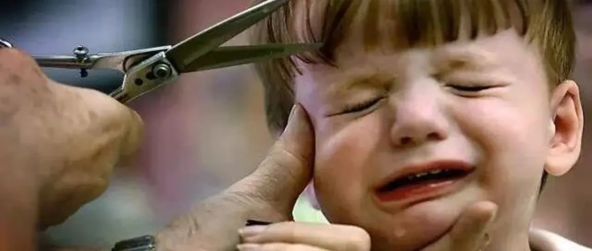
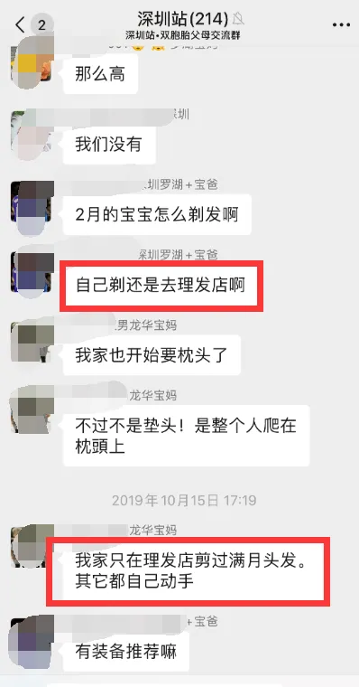
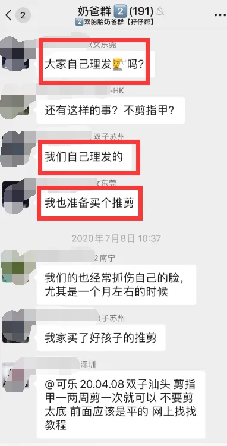
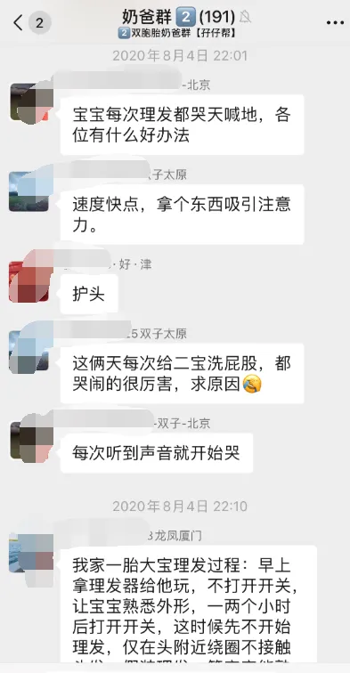
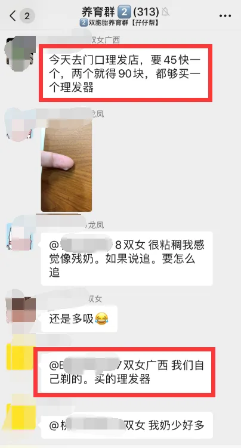
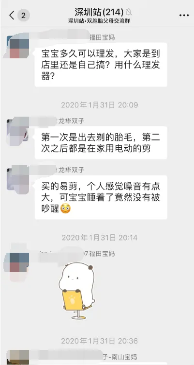
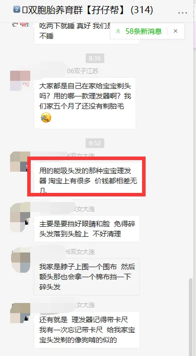
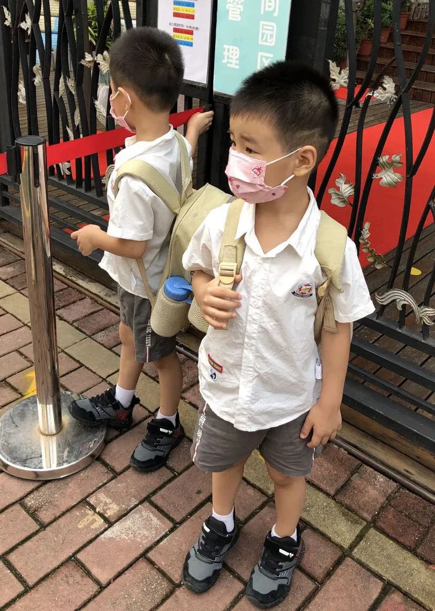
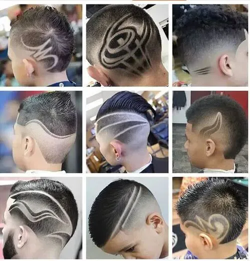
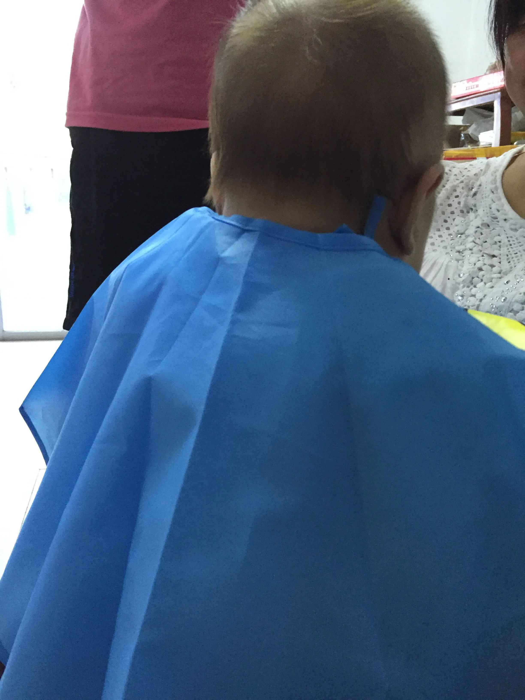
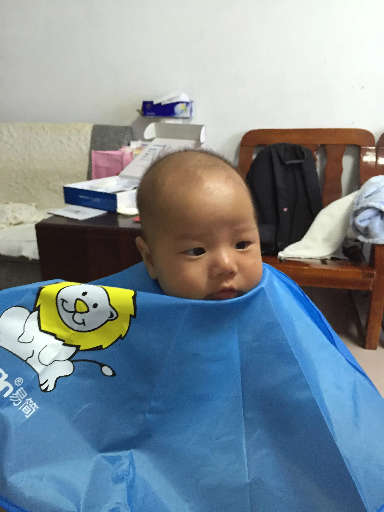